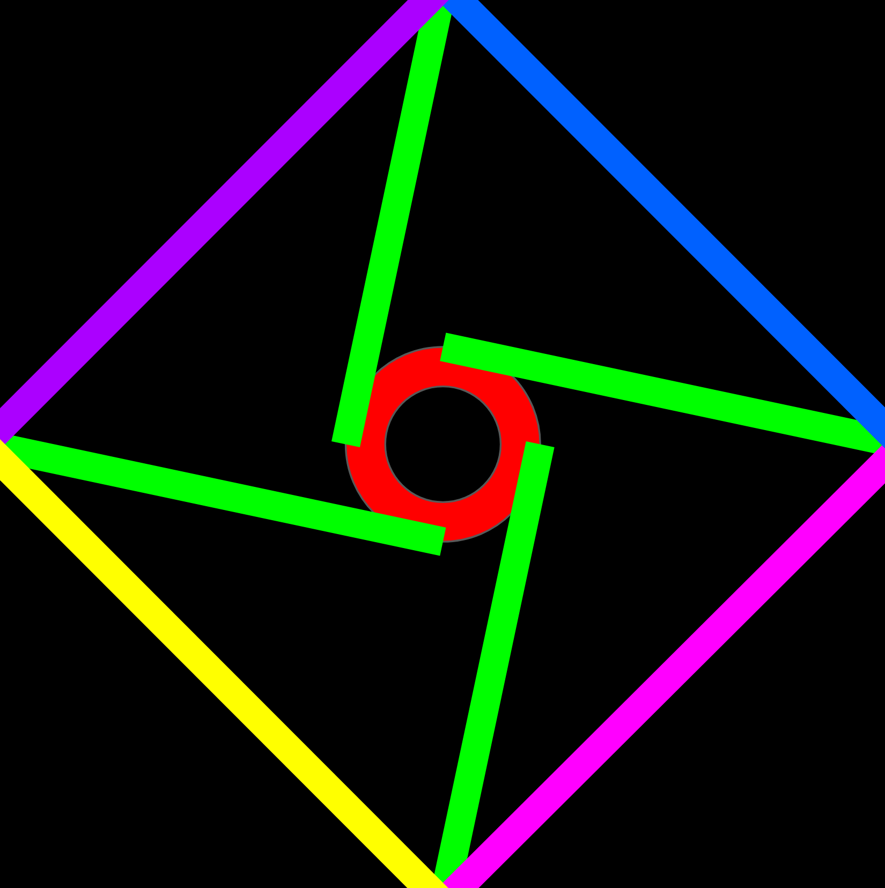

_Alignof

-----BEGIN PGP PUBLIC KEY BLOCK-----
mDMEard9xhYJKwYBBAHaRw8BAQdAIEWs3PKdVEy4U2DBKzHxC8TtgSbIlXd8LEhh
rSmzFz60JE5vcmltYXNhIFRBS0FOQSA8Y29udGFjdEB0YWthbmEuZGV2PoiOBBMW
CgA2FiEEkSYU16IlDe2rSwaIvoLmz8/SY+IFAmq3fcYCGwEECwkIBwQVCgkIBRYC
AwEAAh4BAheAAAoJEL6C5s/P0mPiPlwA/j6/WmI5I40WXJhv32RYCF9YWL8BoN7Z
vwv9GlUVV6ybAQCyAQo+9BKzfl+B/yRIso/eeWZtC1ry4IZ3Lgq1RTEKAbgzBGq3
fkEWCSsGAQQB2kcPAQEHQJ619rhjiOz60Kqdwxj824OSqgGf0PvwAWw3ZnQXOmsC
iPUEGBYKACYWIQSRJhTXoiUN7atLBoi+gubPz9Jj4gUCard+QQIbAgUJA8JnAACB
CRC+gubPz9Jj4nYgBBkWCgAdFiEEVxt3xWrOY/MM7Aiij0jkSvNEfqcFAmq3fkEA
CgkQj0jkSvNEfqd0GAEAtVM93RKGJG8dNK/Di3b2tzPCRxQjqoRWaTBtIn9L1M0B
AKt7TdjhqxlbtMUDdUIod0hnQKB/l94dRpGjyEWct4QF43sBANleilpYnCsfdsqC
S4lCGd66pPrukJxBeLWNe/FzgIAyAP48G9FkcciaBo3/kj1V3ENmczeO6DZpB8ZL
6XLbMxxrArg4BGq3fkoSCisGAQQBl1UBBQEBB0A3kiwx+yEUDa6Iizr+bWUzTIdz
0+0SWud4DdDeMJWcSgMBCAeIfgQYFgoAJhYhBJEmFNeiJQ3tq0sGiL6C5s/P0mPi
BQJqt35KAhsMBQkDwmcAAAoJEL6C5s/P0mPii/YBAMy68I/uZHnRQ9XSCVzVoPsT
Dw5Q5a9+Zya81SqYEs6EAQDsOAo/FRQJmVVPTYqhvTuicrkLb900gz8Pt6YF7QBF
CLgzBGq3flMWCSsGAQQB2kcPAQEHQPLMUuu9iSxeuY3HkA+mkg9cU07h5ql2DzYE
mjEgdSFpiH4EGBYKACYWIQSRJhTXoiUN7atLBoi+gubPz9Jj4gUCard+UwIbIAUJ
A8JnAAAKCRC+gubPz9Jj4klSAQDTkMvOqcOIFLh/sgHEwF6P2M/62N8lGnimM9FD
abLqWAEAit1BEkvEMdGYrgZJu5o67weRssaYtgOv+y+o591zqAc=
=grbW
-----END PGP PUBLIC KEY BLOCK-----
-----BEGIN PGP SIGNED MESSAGE-----
Hash: SHA512
OpenPGP key transition statement (2026-09-26)
Old key: 6A4B 60FF 1D9C DE6D 80B7 33D8 F36A AB9B 4B08 501C
Alignof (main) <alignof@outlook.com>
New key: 9126 14D7 A225 0DED AB4B 0688 BE82 E6CF CFD2 63E2
Norimasa TAKANA <contact@takana.dev>
- From now on please use the new key for encryption and signature
verification. This statement is signed by both keys.
-----BEGIN PGP SIGNATURE-----
iQIzBAEBCgAdFiEEaktg/x2c3m2AtzPY82qrm0sIUBwFAmq3z/YACgkQ82qrm0sI
UBzaIBAAgDQc6+ZniYsDcmQ3usDeuYrYhCSCe32G2Sn7EM9X+98DxfA40ZUVI42K
nowJXK0mTCB3bJ/oF1I7IhOb9bWH1XV5K3QYqaw9v7WXU5OkZaB8BvuYHQiEYCAK
jr1kcjgbZcBmLm301NDoG4ovsEtBqMsfizu1nVYUt7OpwtGEnjxPVQni86eagV0K
JC5bdJyh+4mJrmC8SdQIjObJ5o7aU+Wa0fmwRWHQ0s1tBuxf3vjBU9kJTwUmMVYd
E/DP/FYRcGVFMGpg8cnSpw0epPz9HS4M0bi9aQ72dsiGivXifvIZr6X+CG21Fem4
5e/zvfC9sZR0FUdhooAEEdrtDpw2+0qUdT400abVbBD0/BYe5mQpNBvJZtZuz1Aa
G1r/FdBIeWMmYG8PAhosoZL2ypbM+SoiYBXZhgqEt5WkYTMWLHXYmbP35+5/0VfE
HmNplWenZjVhojJ10Q0tumneG/Y5YRBZrvITd1m4x0fE5hfxiFDT2eUPi/BfwMQV
bM4HqT5xAJ/w4eyRGnnZIyBOc4pOB5dqlWkBeq6Y6Bz2tMS8Sjgwd4OHRgRb3zWK
rLjdYeFu4n4yPTanFL/ljvs9bU3IMtMeU4/maZIQFAI3N6f5pqh9TQCfwNyemhpb
G2hVd3R3ZsLXH/VcMQTX5EAeiRJwWZscA9eyRB1dVskVGYvhur6IdQQBFgoAHRYh
BFcbd8VqzmPzDOwIoo9I5ErzRH6nBQJqt9AIAAoJEI9I5ErzRH6nLy4BAOlQefdt
uMcm+hBZMnGWNg4rGzR8yHa7+XXWOGGmlMOdAQDxK2FmydqZiKBLFFLYaTPLX1u5
AalOQU9gKD252DwgBQ==
=xq50
-----END PGP SIGNATURE-----